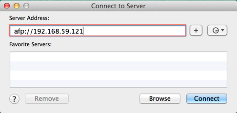

Genel Bakış
Synology NAS yerel ağdaki dosyaları saklamanızı ve paylaşmanızı hızlı ve basit hale getirerek DSM'yer her defasında giriş yapmanıza gerek kalmadan Synology NAS'deki doğrudan paylaşılan klasöre ve dosyalara erişmenize olanak sağlar. Örneğin, dosyaları ağ cihazlarında olduğu gibi Finder ile birlikte Synology NAS'a saklayabileceksiniz.
Mac OS ile Paylaşılan Klasörlere Erişim
- Finder'ı Mac bilgisayarınızda açın.
- Ekranın üst kısmından menü çubuğunu bulun.
- Git üzerine tıklayın ve Sunucuya Bağlan öğesini seçin.
- Synology NAS'ıınız için IP adresini girin, "afp://" ile başlar, örnek, "afp://192.168.59.121". Devam etmek için Bağlan'a tıklayın. 
- DSM kullanıcı adınızı ve parolanızı girin. Kullanıcı hesabınız, erişmek istediğiniz paylaşılan klasör için doğru okuma/yazma önceliklerine sahip olmalıdır. Devam etmek için Bağlan'a tıklayın.
- Son olarak, kullanıcı adı bilgileriniz doğru ise, Synology NAS'ınızın Finder penceresinde Paylaşılan bölümünde listelendiğini göreceksiniz. İçeriğine bakmak için bir paylaşımlı klasör üzerine çift tıklayın.

Favori Sunucular: (+) düğmesine basarak ileride kullanacağınız IP adreslerini favori şeklinde ayarlayın. Aynı zamanda, saat düğmesine tıklayarak son zaanlarda bağlandığınız sunucu sayısının bir listesini görebilirsiniz.